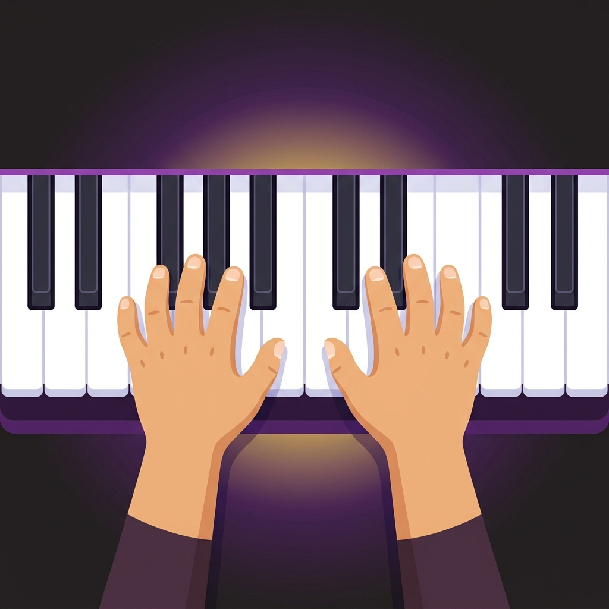

PianoFácil PRO para Mateo
Plataforma educativa gamificada de piano real, con síntesis acústica Web Audio, detección inteligente por micrófono, avatar 3D reactivo y progresión adaptativa de 9 mundos.
🏛️ Los 4 Pilares del Método Pedagógico
Detección Guiada
Reconoce las notas del piano acústico en tiempo real con una ventana de tolerancia de ±55 cents, filtrando armónicos y ruidos del ambiente.
Modo Paciente
Pedagogía positiva sin castigos: si Mateo se equivoca, la app ilumina en dorado la tecla correcta con su dedo guía sin reiniciar la canción.
Misiones Diarias
3 retos diarios calculados dinámicamente que premian el hábito y desbloquean un cofre con fanfarria y medallas formativas.
Compañero 3D
Avatar 3D en WebGL (Three.js 100% local) que reacciona con expresiones de alegría, concentración, fuego por racha o motivación.
🗺️ Mapa de Progresión: 9 Mundos y 44 Lecciones
Una ruta estructurada que acompaña a Mateo desde su primera nota hasta la interpretación a dos manos.
🔄 Flujo de una Sesión de Práctica Ideal
🧭 Primera Misión
Colocar el dispositivo en el atril, adoptar postura de manos en "burbuja" y calibrar el micrófono con el Do Central.
🎯 Misiones Diarias
Revisar los 3 objetivos del día (2 canciones, 5 estrellas y 5 minutos de tiempo acumulado).
⏱️ Cuenta 3-2-1
Escuchar la demostración melódica y prepararse con la cuenta regresiva visual y sonora.
🎙️ Grabación Familiar
Grabar la interpretación para reproducirla y compartirla con papá Seba, Fer y Bernardita.
📸 Elementos Visuales y Ergonómicos



✨ Novedades de la Versión 9.0 (Fases 1, 2 y 3)
Fase 1: Motor & Calidad
• Detección dirigida por nota esperada (±55 cents).
• Cero reseteos por fallos (Modo Paciente).
• Cuenta regresiva 3-2-1 animada.
• Limpieza total de flujos de micrófono.
Fase 2: Gamificación & Familia
• Misiones Diarias y Cofre de Recompensas.
• Grabadora de canciones para la familia.
• Mini-tutorial interactivo "Primera Misión".
• Pausas inteligentes a los 15 minutos.
Fase 3: Offline & Control
• Three.js 100% local (cero dependencias CDN).
• Panel de control para padres con PIN de multiplicación.
• Modo Duelo Musical por turnos (Mateo vs Fer).
• Service Worker v9 con precaché total.
⚙️ Ficha Técnica de Arquitectura
| Componente | Tecnología / Implementación | Propósito |
|---|---|---|
| Motor de Audio | Web Audio API + Síntesis aditiva 6 armónicos + Compressor |
Timbre de piano acústico realista con latencia ultra baja. |
| Detección de Pitch | Autocorrelación optimizada + Ventana guiada ±55 cents |
Afinación y validación precisa de notas en piano real. |
| Renderizado 3D | Three.js r128 + GLTFLoader local + WebGL |
Avatar interactivo de Mateo con expresiones reactivas. |
| Empaquetado Móvil | Capacitor 7 + Android SDK 34 + Gradle 8.11 |
Generación de APK nativo optimizado para tablet y celular. |
| Soporte Offline | Service Worker v9 + Cache Storage |
Funcionamiento 100% autónomo sin requerir internet. |
| Persistencia | LocalStorage JSON seguro |
Guarda estrellas, insignias, estadísticas y tiempo diario. |